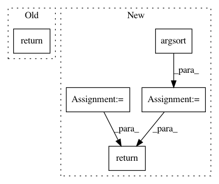

a3d0536ed1493defe29ddf1e5afd0607d45adc61,donkeycar/parts/lidar.py,RPLidar,run_threaded,#RPLidar#,40
Before Change
print("serial.serialutil.SerialException from Lidar. common when shutting down.")
def run_threaded(self):
return self.distances, self.angles
def shutdown(self):
self.on = False
time.sleep(2)
After Change
print("serial.serialutil.SerialException from Lidar. common when shutting down.")
def run_threaded(self):
sorted_distances = []
if (self.angles != []) and (self.distances != []):
angs = np.copy(self.angles)
dists = np.copy(self.distances)
filter_angs = angs[(angs > self.lower_limit) & (angs < self.upper_limit)]
filter_dist = dists[(angs > self.lower_limit) & (angs < self.upper_limit)] //sorts distances based on angle values
angles_ind = np.argsort(filter_angs) // returns the indexes that sorts filter_angs
if angles_ind != []:
sorted_distances = np.argsort(filter_dist) // sorts distances based on angle indexes
return sorted_distances
def shutdown(self):
self.on = False
In pattern: SUPERPATTERN
Frequency: 5
Non-data size: 5
Instances
Project Name: autorope/donkeycar
Commit Name: a3d0536ed1493defe29ddf1e5afd0607d45adc61
Time: 2021-03-18
Author: gca2@earthlink.net
File Name: donkeycar/parts/lidar.py
Class Name: RPLidar
Method Name: run_threaded
Project Name: dirty-cat/dirty_cat
Commit Name: d3ec733c425e7d9d066380b95e04605843339bd0
Time: 2018-11-08
Author: maxime.cuny@inria.fr
File Name: dirty_cat/similarity_encoder.py
Class Name:
Method Name: get_prototype_sorted_by_frequencies
Project Name: DagnyT/hardnet
Commit Name: 04cd555be76efc7baced753c751c4257d41eb75d
Time: 2017-07-27
Author: ducha.aiki@gmail.com
File Name: EvalMetrics.py
Class Name:
Method Name: ErrorRateAt95Recall
Project Name: ekzhu/datasketch
Commit Name: 5240e8ed8e7ac4fd805f3ca6a858375b368d9406
Time: 2015-06-25
Author: ekzhu@cs.toronto.edu
File Name: datasketch/hyperloglog.py
Class Name: HyperLogLogPlusPlus
Method Name: _estimate_bias
Project Name: tensorflow/ranking
Commit Name: 27aef1f3aa3dff22df125ca8a2fa4a4447ac6234
Time: 2019-08-13
Author: xuanhui@google.com
File Name: tensorflow_ranking/python/utils.py
Class Name:
Method Name: organize_valid_indices